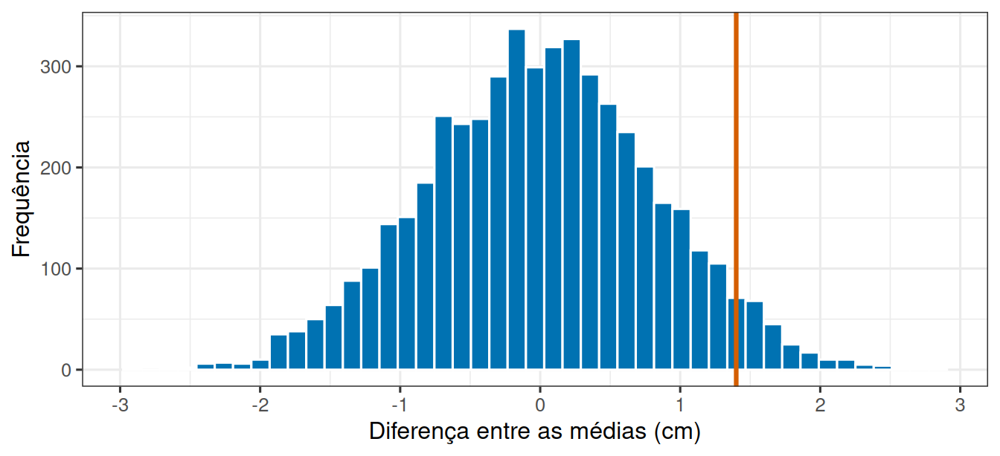
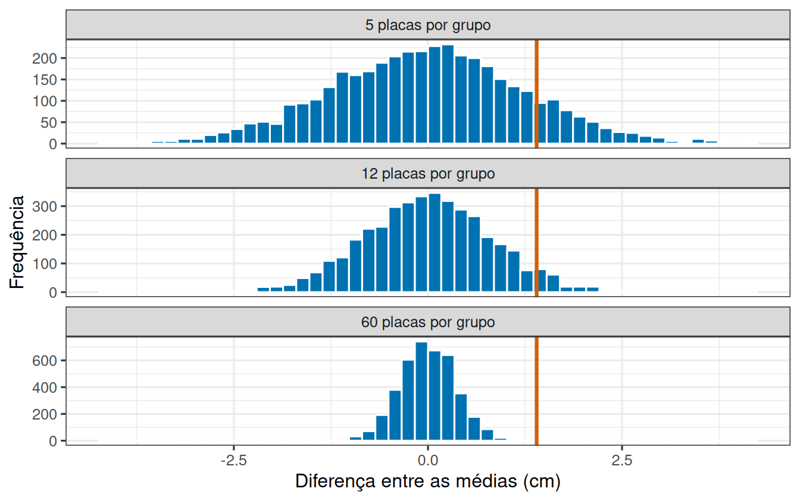

library(tidyverse)
theme_set(theme_bw(base_size = 12))Construindo um mundo sem efeito
Prática em R
1 A diferença é de 1,4 cm. Isso é muito?
Um experimento comparou dois substratos para o assentamento de larvas de mexilhão. Doze placas receberam o substrato A e doze receberam o substrato B, sorteadas. Ao fim, o comprimento médio dos indivíduos diferiu em 1,4 cm entre os dois grupos.
Antes de anunciar um efeito, é preciso responder a uma pergunta que só o computador responde bem: uma diferença desse tamanho apareceria com que frequência se os dois substratos fossem idênticos?
Nesta prática construímos esse mundo sem efeito, olhamos o que ele produz e transformamos essa leitura em um número.
2 Um experimento onde sabemos que não há efeito
Vamos montar um experimento em que a resposta certa é conhecida: doze placas por substrato, variação de 2 cm entre placas, e nenhuma diferença real entre os substratos.
n_por_grupo <- 12
desvio <- 2
centro <- 10.2
substrato_a <- rnorm(n_por_grupo, mean = centro, sd = desvio)
substrato_b <- rnorm(n_por_grupo, mean = centro, sd = desvio)
diferenca <- mean(substrato_b) - mean(substrato_a)
diferenca[1] 0.4120963As duas linhas de rnorm() usam a mesma média. Ainda assim a diferença observada não é zero: nesta execução ela foi de 0,41 cm.
3 Muitas repetições do mesmo experimento
Repetir na mão dá uma impressão, não uma medida. Para ter uma medida, precisamos de muitas repetições, e replicate() faz isso:
diferencas <- replicate(
5000,
mean(rnorm(12, mean = 10.2, sd = 2)) - mean(rnorm(12, mean = 10.2, sd = 2))
)
length(diferencas)[1] 5000mean(diferencas)[1] -0.001333812sd(diferencas)[1] 0.8177371Cinco mil experimentos, todos sem efeito nenhum. O conjunto de resultados que eles produzem é a distribuição nula.
Repare em dois números da saída. A média das cinco mil diferenças fica perto de zero, como se espera de grupos idênticos. O desvio-padrão delas, bem maior que zero, é a medida de quanto o acaso sozinho consegue afastar duas médias.
diferenca_observada <- 1.4
ggplot(tibble(d = diferencas), aes(x = d)) +
geom_histogram(bins = 45, fill = "#0072B2", colour = "white") +
geom_vline(xintercept = diferenca_observada, colour = "#D55E00", linewidth = 1.1) +
labs(x = "Diferença entre as médias (cm)", y = "Frequência")
4 Qual é a proporção de resultados tão extremos?
O valor de p é apenas uma contagem: quantas das cinco mil diferenças foram tão distantes de zero quanto a observada.
proporcao_extremos <- mean(abs(diferencas) >= diferenca_observada)
proporcao_extremos[1] 0.0902abs() toma o valor absoluto, o >= gera TRUE/FALSE para cada uma das cinco mil, e mean() de um vetor lógico devolve a proporção de TRUE.
5 O mesmo mexilhão, três experimentos diferentes
A distribuição nula não descreve o mexilhão: descreve o experimento. Vamos refazer a simulação com 5, 12 e 60 placas por grupo, mantendo tudo o mais igual.
nulas <- bind_rows(
tibble(cenario = "5 placas por grupo",
diferenca = replicate(4000, mean(rnorm(5, 10.2, 2)) - mean(rnorm(5, 10.2, 2)))),
tibble(cenario = "12 placas por grupo",
diferenca = replicate(4000, mean(rnorm(12, 10.2, 2)) - mean(rnorm(12, 10.2, 2)))),
tibble(cenario = "60 placas por grupo",
diferenca = replicate(4000, mean(rnorm(60, 10.2, 2)) - mean(rnorm(60, 10.2, 2))))
) |>
mutate(cenario = fct_relevel(cenario, "5 placas por grupo", "12 placas por grupo"))
glimpse(nulas)Rows: 12,000
Columns: 2
$ cenario <fct> 5 placas por grupo, 5 placas por grupo, 5 placas por grupo, …
$ diferenca <dbl> 1.30229249, 4.16025461, -1.22401499, 1.19121644, 0.02844295,…ggplot(nulas, aes(x = diferenca)) +
geom_histogram(bins = 50, fill = "#0072B2", colour = "white") +
geom_vline(xintercept = diferenca_observada, colour = "#D55E00", linewidth = 1.1) +
facet_wrap(~ cenario, ncol = 1, scales = "free_y") +
labs(x = "Diferença entre as médias (cm)", y = "Frequência")
A mesma conta de antes, agora feita nos três cenários de uma vez:
nulas |>
group_by(cenario) |>
summarise(
espalhamento = sd(diferenca),
proporcao_extremos = mean(abs(diferenca) >= diferenca_observada)
)# A tibble: 3 × 3
cenario espalhamento proporcao_extremos
<fct> <dbl> <dbl>
1 5 placas por grupo 1.25 0.260
2 12 placas por grupo 0.814 0.0888
3 60 placas por grupo 0.360 0.00056 O limiar de 5% cumpre o que promete?
Escolher 5% como limiar significa aceitar acusar diferença em cerca de 5% das vezes quando não há diferença nenhuma. Como construímos um mundo sem efeito, podemos verificar isso.
Primeiro, o valor acima do qual ficam as 5% maiores diferenças da distribuição nula:
limiar <- quantile(abs(diferencas), 0.95)
limiar 95%
1.598073 Agora rodamos novos experimentos, também sem efeito, e contamos quantos ultrapassam esse limiar:
novos_experimentos <- replicate(
2000,
mean(rnorm(12, mean = 10.2, sd = 2)) - mean(rnorm(12, mean = 10.2, sd = 2))
)
taxa_alarme <- mean(abs(novos_experimentos) >= limiar)
taxa_alarme[1] 0.0565